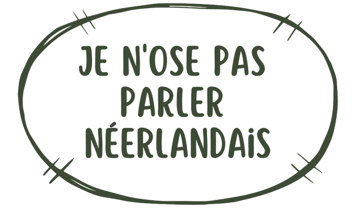
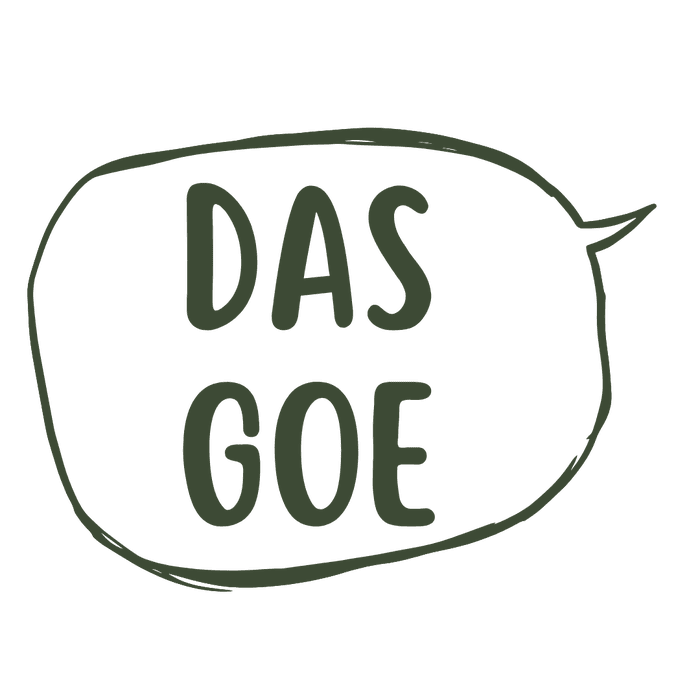
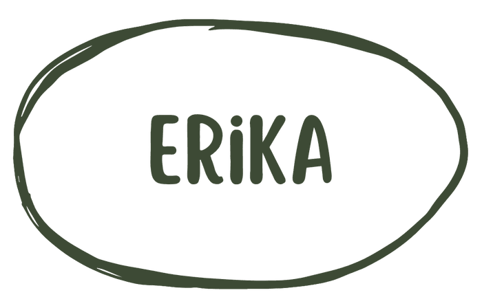
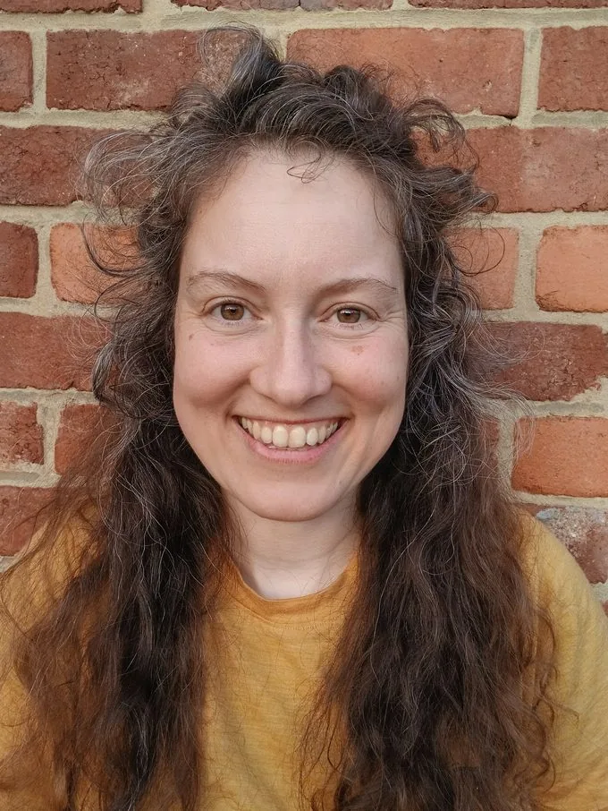
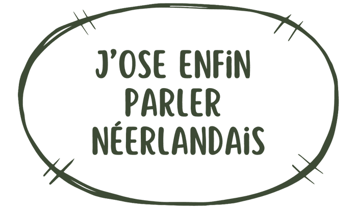

DAS GOE — Qui-Quoi

Je n'ose pas parler néerlandais
Tu comprends un peu le néerlandais, mais ta gorge se serre dès que tu dois répondre ?
Un collègue flamand qui bascule en néerlandais en réunion. Les beaux-parents autour de la table à la Côte. Tu comprends tout — et pourtant, rien ne sort.
Pour parler, il faut fuir l'école.

DAS GOE
J'ai créé DAS GOE (« c'est bon ! » en flamand) pour te redonner le pouvoir de t'exprimer sans souffrir. Si tu te figes ou si tu paniques à l'idée de parler néerlandais aujourd'hui, ce n'est pas parce que tu es « nul » — c'est juste que ton cerveau a été braqué par une école traditionnelle qui t'a forcé à intellectualiser la langue au lieu de simplement la vivre.
En tant que coach en gestion du stress (formée à la cohérence cardiaque et à la respiration anti-hyperventilation), je le vois à chaque fois : on marche, on bouge, et le stress qui bloquait la parole retombe tout seul.
- Zéro théorie
Rien à étudier par cœur. Jamais.
- Zéro stress
Un cadre bienveillant où faire des fautes est célébré.
- 100% plaisir
On respire, on bouge et on pratique la vraie babbel.
Qui suis-je pour te promettre ça ?

Erika
Fondatrice de DAS GOE, professeure de néerlandais native flamande installée à Viroinval (Wallonie), et coach en gestion du stress formée à la cohérence cardiaque.

Salut, moi c'est Erika, Débloqueuse de Parole & Facilitatrice Linguistique. Je suis là pour te sauver des bancs d'école.
J'adore les langues, mais j'ai toujours détesté les étudier. Mon vrai déclic est venu ailleurs : des amis francophones, trois mots cassés, d'immenses fous rires. Mon français a explosé, sans dictionnaire. J'ai refait le coup au Pérou, en Ukraine, en Chine.
Aujourd'hui, il me reste une dizaine de mots de russe et mon espagnol s'endort — mais la langue revient en quelques jours dès que j'y remets un pied. Le blocage total n'est souvent qu'un mensonge du stress.
C'est ça, la vraie leçon de mes trois langues « oubliées » : on ne repart jamais vraiment de zéro. On repart juste débloqué.
Ma philosophie tient en 3 piliers simples
- Parler tout de suite
Même avec trois mots cassés.
- Vivre des expériences réelles
Le rire et l'action fixent une langue 10 fois plus vite dans ton cerveau.
- Se foutre royalement des fautes
On veut de la connexion, pas de la perfection.
Parler d'abord, la perfection viendra plus tard qu'on ne le pense.
Le secret pour oser s'exprimer, c'est le lien humain, pas la grammaire. Bon, avoir un amoureux local reste la technique ultime… mais ce n'est pas toujours facile à trouver !
Ce qu'ils en disent
J'ose enfin parler néerlandais

« Très chouette soirée organisée par Erika. Un moment de convivialité pour discuter en néerlandais autour du feu en toute bienveillance et avec zéro jugement. »
Michaël Rousseau — recommande
« Un accueil chaleureux, une activité où le respect de chacun est primordial, chacun vient comme il est et découvre ou approfondit son lien avec la nature, avec les autres et avec lui-même. Une très belle expérience. »
Inès Pesneau — recommande
Prêt à débloquer ta parole en t'amusant ?… DAS GOE !
Ne laisse pas une mauvaise expérience scolaire te bloquer toute ta vie : chaque année qui passe, c'est une conversation en plus que tu n'as pas eue avec un collègue, un beau-parent ou un voisin flamand.